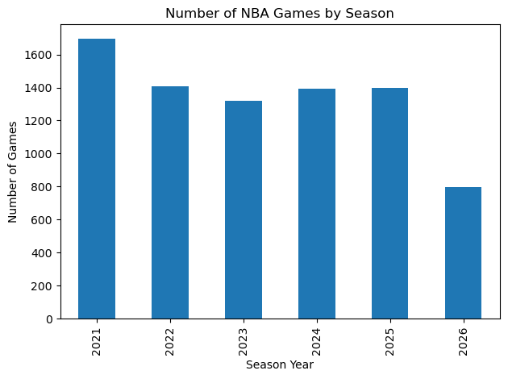

Goal: build a machine learning model that predicts whether the home team wins an NBA game using recent team performance and matchup-differential features.
This analysis uses only the workflow developed in this project:
Data cleaning
Exploratory data analysis
Rolling feature engineering
Matchup-differential features
Logistic Regression, Ridge, Lasso, Random Forest, and XGBoost
Hyperparameter tuning for Logistic Regression and XGBoost
Final model comparison and interpretation
The analysis focuses on NBA games from 2021–2026 because recent seasons better represent the modern NBA style of play.
1. Loading Libraries and Data
The first step is to load the libraries used throughout the project and read in the NBA games dataset. The argument low_memory=False helps pandas handle mixed column types more reliably.
The cleaning stage prepares the raw game data for time-aware sports prediction. The main decisions are to convert dates, keep modern NBA seasons, remove incomplete games, create the target variable, and create readable team names.
The target is home_win, where:
1 means the home team won
0 means the away team won
Code
games = raw_games.copy()# Convert date columnsgames["gameDateTimeEst"] = pd.to_datetime(games["gameDateTimeEst"], errors="coerce")games["gameDate"] = pd.to_datetime(games["gameDate"], errors="coerce")# Create season yeargames["season_year"] = games["gameDateTimeEst"].dt.year# Keep modern NBA seasonsgames = games[(games["season_year"] >=2021) & (games["season_year"] <=2026)].copy()# Remove duplicate gamesgames = games.drop_duplicates()games = games.drop_duplicates(subset=["gameId"])# Remove games without final scoresgames = games.dropna(subset=["homeScore", "awayScore"])games = games[(games["homeScore"] >0) & (games["awayScore"] >0)].copy()# Create target variablegames["home_win"] = (games["homeScore"] > games["awayScore"]).astype(int)# Create clean team namesgames["home_team"] = ( games["hometeamCity"].astype(str) +" "+ games["hometeamName"].astype(str))games["away_team"] = ( games["awayteamCity"].astype(str) +" "+ games["awayteamName"].astype(str))games["home_team"] = games["home_team"].str.replace(r"\s+", " ", regex=True).str.strip()games["away_team"] = games["away_team"].str.replace(r"\s+", " ", regex=True).str.strip()# Create playoff and COVID-era indicatorsgames["is_playoff"] = (games["gameType"] !="Regular Season").astype(int)games["covid_era"] = (games["season_year"] <=2021).astype(int)# Remove rows missing team namesgames = games.dropna(subset=["home_team", "away_team"]).copy()# Sort chronologicallygames = games.sort_values("gameDateTimeEst").reset_index(drop=True)games.head()
gameId
gameDateTimeEst
hometeamCity
hometeamName
hometeamId
awayteamCity
awayteamName
awayteamId
homeScore
awayScore
...
arenaCity
arenaState
officials
gameDate
season_year
home_win
home_team
away_team
is_playoff
covid_era
0
22000071
2021-01-01 19:00:00
Dallas
Mavericks
1610612742
Miami
Heat
1610612748
93
83
...
NaN
NaN
NaN
2021-01-01 19:00:00
2021
1
Dallas Mavericks
Miami Heat
0
1
1
22000070
2021-01-01 19:00:00
Detroit
Pistons
1610612765
Boston
Celtics
1610612738
96
93
...
NaN
NaN
NaN
2021-01-01 19:00:00
2021
1
Detroit Pistons
Boston Celtics
0
1
2
22000069
2021-01-01 19:00:00
Charlotte
Hornets
1610612766
Memphis
Grizzlies
1610612763
93
108
...
NaN
NaN
NaN
2021-01-01 19:00:00
2021
0
Charlotte Hornets
Memphis Grizzlies
0
1
3
22000072
2021-01-01 19:30:00
Brooklyn
Nets
1610612751
Atlanta
Hawks
1610612737
96
114
...
NaN
NaN
NaN
2021-01-01 19:30:00
2021
0
Brooklyn Nets
Atlanta Hawks
0
1
4
22000074
2021-01-01 20:00:00
Minnesota
Timberwolves
1610612750
Washington
Wizards
1610612764
109
130
...
NaN
NaN
NaN
2021-01-01 20:00:00
2021
0
Minnesota Timberwolves
Washington Wizards
0
1
5 rows × 29 columns
Cleaning Check
These checks verify that the cleaned dataset behaves realistically before modeling. A home-win rate around the mid-50% range is reasonable for NBA data because home-court advantage matters.
Code
print("Home win distribution:")print(games["home_win"].value_counts(normalize=True))print("Games by season:")print(games["season_year"].value_counts().sort_index())print("Missing values in key columns:")print(games[["gameId", "gameDateTimeEst", "season_year", "home_team", "away_team", "home_win"]].isna().sum())
The EDA is used to verify that the dataset structure makes sense and to motivate the modeling setup. The most important checks are the number of games per season, the home-win distribution, and home-win rate over time.
Code
season_counts = games["season_year"].value_counts().sort_index()season_counts.plot(kind="bar")plt.title("Number of NBA Games by Season")plt.xlabel("Season Year")plt.ylabel("Number of Games")plt.tight_layout()plt.show()

Code
home_win_counts = games["home_win"].value_counts(normalize=True).sort_index()home_win_counts.index = ["Away Team Wins", "Home Team Wins"]home_win_counts.plot(kind="bar")plt.title("Home Win vs Away Win Distribution")plt.xlabel("Game Outcome")plt.ylabel("Proportion")plt.ylim(0, 1)plt.tight_layout()plt.show()
The raw data is one row per game. To calculate recent team performance, each game is converted into two rows: one from the home team’s perspective and one from the away team’s perspective.
This creates a team-level dataset where rolling features can be calculated separately for each team.
Rolling features summarize how a team performed before the current game. The key step is shift(1), which prevents the current game’s result from being included in its own predictor values. This avoids future leakage.
After calculating rolling team features, the data is converted back into one row per game. The model predicts whether the home team wins, so the final features compare the home team against the away team.
These features measure relative advantage rather than evaluating teams in isolation.
6. Modeling Setup
Because NBA games occur over time, the split is chronological rather than random. This better simulates real-world forecasting and avoids using future games to predict past games.
Logistic regression is the baseline model because it is interpretable and produces probabilities. This matters because the long-term goal is not only to classify winners, but to estimate the probability that a team wins.
Since logistic regression performed strongly, I tuned the regularization strength using cross-validation. I also attempted XGBoost tuning, but the tuned XGBoost model did not outperform logistic regression.
Fitting 3 folds for each of 15 candidates, totalling 45 fits
Tuned XGBoost Accuracy: 0.6214852198990627
Tuned XGBoost ROC-AUC: 0.6566301817953073
10. Model Comparison
The final comparison uses accuracy and ROC-AUC. ROC-AUC is especially important here because the project is ultimately about probability-based sports prediction, not only hard classifications.
After evaluating models on the 2025 test season, the tuned logistic regression model is selected as the final model because it performed best while remaining simple and interpretable. The final model is retrained on 2021–2025 before being applied to 2026 games.
The most important result is that the tuned logistic regression model performed better than more complex models such as Random Forest and XGBoost. This suggests that the engineered matchup-differential features captured strong linear predictive structure.
The tree-based feature-importance results also showed that recent point differential was one of the most important predictors. This makes basketball sense because point differential summarizes both offensive and defensive strength.
13. Limitations and Future Work
This analysis is a strong first version, but it has limitations:
It does not include player injuries.
It does not directly include trades or roster changes.
It does not include travel distance or back-to-back effects yet.
It does not include sportsbook odds or implied probabilities.
It only uses last-5 rolling windows.
The 2026 season may be incomplete, so 2026 predictions should be interpreted cautiously.
Future versions could include injury reports, rest days, travel features, betting odds, Elo ratings, player-level data, and model calibration.
Conclusion
This project built an end-to-end NBA win/loss prediction pipeline using modern NBA data from 2021–2026. The analysis cleaned the raw data, created rolling team-strength features, engineered matchup differentials, compared multiple models, tuned key models, and selected a final model for 2026 prediction.
The main conclusion is that careful feature engineering mattered more than model complexity. Recent team momentum and recent point differential provided meaningful predictive signal, and the tuned logistic regression model produced the strongest overall performance while remaining interpretable.
Note
Some code debugging and writing support were completed with the help of AI. All modeling decisions, outputs, and interpretations were reviewed and understood before inclusion in the final analysis.